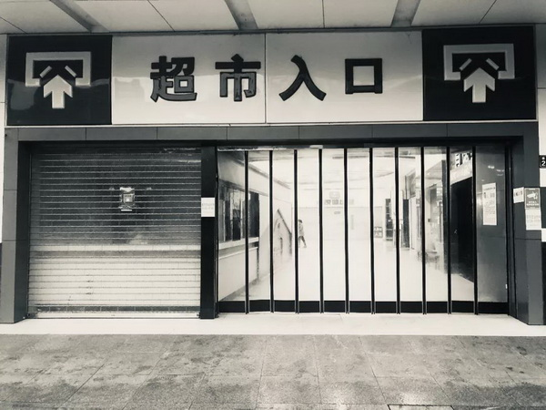
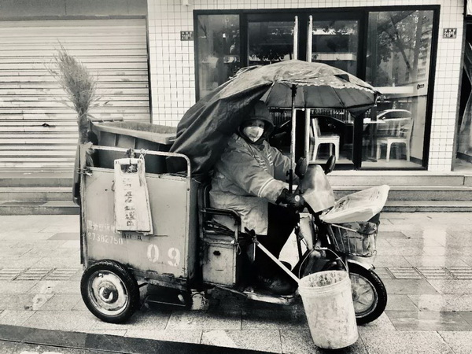

疫情阴影下的异乡湖北人：难回家乡、住不进酒店
原文链接 备份链接 28.01.2020本文字数：3123，阅读时长大约6分钟 导读：湖北人也是受害者。 作者 | 第一财经 杨佼 “我有点后悔离开武汉了。自从回到乡下，武汉的新冠肺炎疫情很让人揪心，过年也变得寡然无味，大家都心神不宁 …
澎湃新闻记者 范佳来
2020-01-31 12:31 来源：澎湃新闻
字号
“我在武汉。但我真的不知道此时的武汉，还是不是我渴望期盼的那个武汉。”1月30日，诗人小引告诉澎湃新闻记者。
小引原名王朝晖，1969年出生，除了诗人身份，他还是武汉大学土建学院的老师。在武汉封城期间，他以每天一篇的频率，在自己的微信公众号上持续记录武汉的真实情况，引起了人们的关注。
同时，在做好防护措施的基础上，他和朋友们一起为武汉拍摄了许多“封城”期间的照片，希望记录这段历史，向外界传播及时讯息。
“最近这两天，看了很多武汉‘封城’之后来自全国各地的消息，那些直接而真实的照片和视频，让我的情绪很沮丧。疫情爆发以来，我一直反复提醒自己，告诫自己写文章不要冲动，不要情绪化。但昨天到今天，我哭了两次，这真是难以置信。”小引告诉澎湃新闻记者。
让他感怀的是，在生命面前，以往人们所追求的金钱、权力、名誉等变得不再重要，人们开始珍惜身边最宝贵的家人和朋友。第一次流泪，是他看到一篇关于疫情的报道：一个女孩的母亲感染新冠病毒在医院死去，父亲因为照顾母亲也不幸染上。送走母亲后，女孩和父亲各种驾车停在路边，打下车窗却只能四目相对不能说话，最后女孩去找她的哥哥，两人导航定位重叠，但一个在高架桥上，一个在高架桥下。
另一次，是看到电影《囧妈》片段，做企业家的儿子冒犯母亲，而母亲却依然倔强地容忍且试图纠正孩子。看完后，他没忍住，给父母打去了电话，问他们蔬菜够不够吃，要不要给他们送一点去。
“母亲在电话中说，没问题，够吃一星期的了。不等我说话，她开始反问我，你怎么样？儿子怎么样？把我问她的话反问了我一遍；又告诫我，要注意安全，要相信党和政府。”面对母亲的关爱，小引又一次落泪。
在他看来，此次爆发的疫情异乎于往常任何一次灾难，而且由于早期的操作问题，至今许多疑问都没能得到解答。现在灾情情况严峻，一线医务工作者奋力在遏制疫情，武汉整个城市已经成为举世瞩目的一座“孤岛”。
“这也是我每天拍摄照片、更新个人微信号的原因，现在最重要的是把武汉的真实情况告诉外界，在灾难面前，信息自由的流转是遏制病毒蔓延的另一个有力的手段。”小引说。

广埠屯地铁站的紧急公告 拍摄日期：1月26日。本文图片由小引提供

听说第二天武汉中心城区禁行，小引去武商量贩店购物。 拍摄日期：1月26日

武汉大学和华师之间空荡荡的天桥 拍摄日期：1月26日

武汉雨中的环卫工人。分别时，他挥了挥手，潇洒地把车开走了。 拍摄日期：1月26日
在灾难面前，身为诗人的小引却无力拿起笔来创作。
“我不反对在灾难来临前创作文艺作品或是诗歌。”小引说，但在他看来，武汉疫情复杂，不仅仅是地震，车祸那样清晰明了，“瘟疫、病毒这样的东西给我们带来的伤害，迥异于坍塌、倾覆和爆炸冲击波。”
在这位诗人看来，病毒正在从最低级的地方对人们固有的文化结构、思维模式、逻辑框架产生冲击，“或许，我们只能以病毒的方式击退病毒。基于以上的观点，我个人目前在新冠病毒的疫情中无法动笔，也不愿意动笔。但我并不反对别人动笔写。”
今天，武汉迎来了久违的阳光，在小引的朋友圈中，许多人感叹一个多月来难得的好天气。也有人在微博上晒出利好消息，提到武汉确诊人数的上升势头在放缓。
“阳光照着武昌，照耀着汉口和汉阳，也照着病毒。传言说，病毒怕高温，冬天来，春天走，我不知道真假，也无从希望知道什么。”小引在微信号中写道，此时他最大的心愿，就是这场疫情快点过去，武汉能从舆论风暴恢复到原先的平静。

武水著名的三岔路口 拍摄日期：1月30日

正在囤货的武汉市民 拍摄日期：1月30日
(本文来自澎湃新闻，更多原创资讯请下载“澎湃新闻”APP)
关键词 >>

澎湃新闻APP下载

原文链接 备份链接 28.01.2020本文字数：3123，阅读时长大约6分钟 导读：湖北人也是受害者。 作者 | 第一财经 杨佼 “我有点后悔离开武汉了。自从回到乡下，武汉的新冠肺炎疫情很让人揪心，过年也变得寡然无味，大家都心神不宁 …
原文链接 备份链接 非常时期，武汉成了全国人民挂念、祈福的城市。封城后，武汉人民的真实生活是什么样？ 正和岛自1月26日起特别推出《叶青：我在武汉疫区的第N天》专栏。叶青是一位定居武汉40年的市民，也是一名学者和官员。接下来的一段时间，他 …
原文链接 备份链接 二月初三。 天气好到令人惊讶，中午温度快达20度了吧？开着暖气已有热的感觉。但到晚上，又突然下雨，很反常也很怪异。反正不能出门，看手机便成每日的必修课。 一早看到几个视频，真是有话想说。视频有两类：一类是外省的捐赠蔬菜 …
原文链接 备份链接 二月初三。 天气好到令人惊讶，中午温度快达20度了吧？开着暖气已有热的感觉。但到晚上，又突然下雨，很反常也很怪异。反正不能出门，看手机便成每日的必修课。 一早看到几个视频，真是有话想说。视频有两类：一类是外省的捐赠蔬菜 …
原文链接 备份链接 【财新网】（记者 黄蕙昭）从全国看，疫情还处于早期散发阶段。国家卫健委主任马晓伟在1月26日下午国务院新闻办举行的发布会上表示。截至1月26日20时，中国确诊新型冠状病毒肺炎病例2058例，其中湖北1052例，而非湖 …